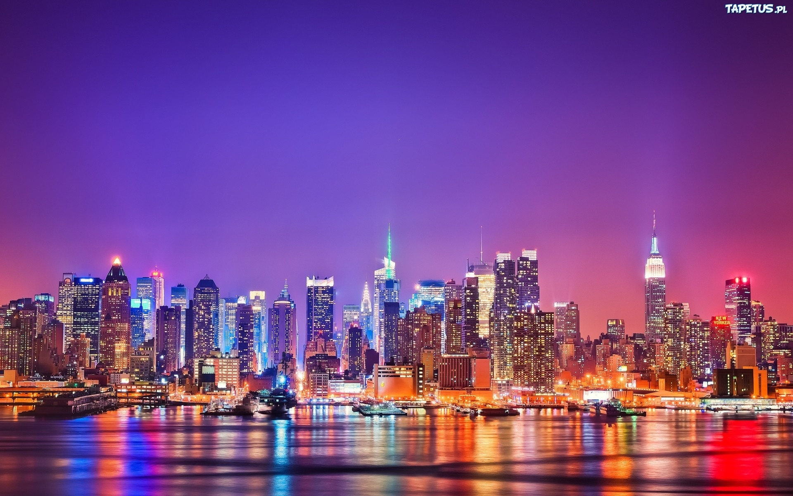

| Australia | Hong Kong | Nowy Jork | Alaska |
|---|---|---|---|

|
 |
Dlaczego te miejsca?
Na samą myśl o tych miejscach moje serce zaczyna bić szybciej.
Czuje się, jakbym się tam znajdował.Są one moją motywacją,
a ich istnienie napędza mnie do działania. Miejsca, które tu przedstawię
są moim marzeniem i oddałbym wiele, aby w tym momencie znaleźć się w każdym z nich.
Australia
Australia jest dla mnie czymś innym niż reszya świata,
jakby zupełnie inną rzeczywistością. Jest miejscem występowania
gatunków roślin i zwierząt, których nie ma nigdzie indziej.
Widoki są niesamowite,a warunki mieszkania pomagają odciąć się
od normalnego, rutynowego życia i spędzić trochę czasu inaczej.
Hong Kong
Hong Kong podziwiam za jego infrastrukture. Mieszkając w Polsce
możemy myśleć, że Warszawa ma rozbudowaną gospodarkę. Kiedy jednak
spojrzymy na panoramę Hong Kongu od razu zmienimy zdanie. Kultura
tego miasta jest równie fascynująca. Jednymi z najpopularniejszych
atrakcji turystycznych tego miasta są świątynie, wybudowane przez jego przodków
Nowy Jork
Nowy Jork jest miejscem, z którym utożsamiam się w moich działaniach.
Uwielbiam nowojorski styl artystyczny, kulinarny i taneczny. Staram
się urządać mój pokój inspirując się tamtejszymi zwyczajami. Nowojorscy
artyści bardzo mnie motywują i swoimi pasjami motywują do działania.
Alaska
Alaska jest mroźnym rajem naszej planety. Jest to niezwykłe miejsce,
które podziwiam za jego wyjątkowość. Ludzie mieszkający tam muszą
wykazać się niesamowitą odwagą i wyrozumiałością ponieważ samo
zaplanowanie miejsca zamieszkanai bywa problematyczne. Ich cechy
charakteru bardzo mnie inspirują i próboje choć w jednym procencie
być tam nieustępliwym jak oni.